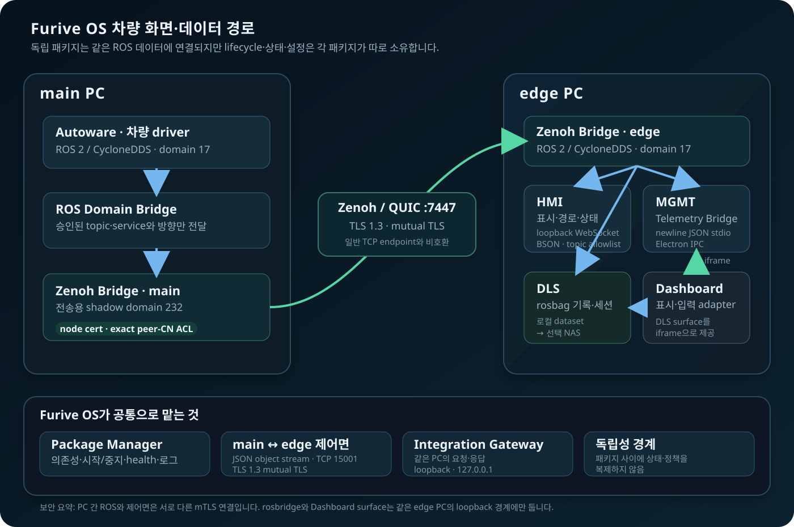

🎥 Data Logging System(DLS) 사용 가이드¶
Data Logging System(DLS)은 HMI-ECU에서 선택한 ROS 2 topic을 rosbag 세션으로 기록하고, 세션을 검색·재생하며,
승인된 NAS로 전송하는 독립 시스템입니다. 화면은 1920×1080 Furive OS의 기록 작업 영역에 표시됩니다.
MGMT의 기록 탭도 같은 DLS surface를 iframe으로 보여줄 뿐 녹화·전송·보존 상태를 소유하지 않습니다.
PDF의 화면별 해설은 Furive OS 공통 차량 화면과 상·하단 shell을 제외하고 DLS 작업 영역만 크게 표시합니다.
오프라인 운용본은 DLS PDF 사용 설명서입니다.
대상 기록·데이터 운용 담당자
시작 위치 기록 화면 또는 CLI
완료 기준 파일 전체 검사 결과와 토픽별 누락·공백 확인
1. 시작과 화면 진입¶
차량 설치가 끝나면 Furive OS가 DLS를 자동으로 시작합니다. 평소에는 다음 순서로 화면을 엽니다.
- Furive OS 하단의
기록을 선택합니다. - 오른쪽 작업 영역에
운영과설정탭이 나타나는지 확인합니다. 운영에서 녹화 상태, 차량 저장소와 최근 세션을 먼저 확인합니다.
화면이 나타나지 않을 때만 아래 명령으로 공통 service와 package 상태를 확인합니다.
재시작 전에는 진행 중인 녹화·전송·재생이 없는지 확인합니다. 화면이 닫혔다고 녹화가 자동 종료된 것으로 판단하거나, DLS 컨테이너·프로세스·포트를 직접 종료하지 않습니다.
| 역할 | 허용 작업 |
|---|---|
| 운용자 | 상태·저장 공간 확인, 수동 녹화, 세션 선택, 승인된 재생·전송, 결과 기록 |
| 개발자 | 기록/trigger topic, 자동 녹화 state, ROS domain, NAS·변환·보존 정책과 장애 원인 확인 |
⌨️ 토픽 조회부터 녹화까지¶
| 단계 | 명령 | 확인할 결과 |
|---|---|---|
| ① 차량 토픽 조회 | furive topic list |
발행·중앙 전달 설정·수신 PC 조회 상태 |
| ② 수신 가능한 토픽 기록 | furive topic record <topic> |
기존 기록 선택에 추가하고 수동 녹화 시작 |
| ③ 녹화 종료 | furive topic stop |
녹화 종료 상태와 검사 접수 |
| ④ 세션 찾기 | furive topic sessions |
로컬 녹화 세션 이름 |
| ⑤ 검사 결과 | furive topic inspect <세션> --status |
파일 무결성·실제 메시지 수·토픽 누락·기록 공백 |
위 furive topic 흐름은 A-ECU에 연결된 수신 PC의 DLS를 대상으로 합니다. 1PC에 함께 설치한 DLS는
이 가이드의 로컬 화면에서 녹화·세션·파일 검사를 사용합니다.
꼭 확인
토픽이 목록에 보이는 것과 데이터가 파일에 저장되는 것은 다릅니다.
전달 경로가 없으면 토픽 명령어 표와 흐름도를 따라 중앙 설정을 먼저 적용합니다.
record는 기존 선택 토픽도 함께 기록하며, stop은 진행 중인 DLS 녹화를 끝냅니다.
2. 운영 화면을 읽는 순서¶
운영 화면은 항상 다음 순서로 읽습니다.
- 차량 데이터 녹화:
대기 중또는녹화 중, 방식, 현재 세션과 경과 시간 - 차량 데이터 경로: 차량 저장소 사용률 → 운영 NAS 사용률 → 전송 큐와 최근 결과
- 주행 데이터 기록: 세션 이름·시각·유형·topic 수·message 수·위치·크기
- 기록 재생: 선택 세션, 재생 상태, 현재/전체 시간과 제어 버튼
| 화면 상태 | 의미 | 운용 판단 |
|---|---|---|
대기 중 |
현재 recorder가 기록하지 않음 | 정상 대기일 수 있음. 의도한 자동 정책과 운행 계획을 대조 |
녹화 중 |
recorder가 세션을 쓰는 중 | 세션 이름과 경과 시간이 계속 변해야 함 |
전송 대기 |
NAS 큐에 작업이 있거나 전송 조건을 기다림 | 완료가 아님. 로컬 삭제 금지 |
진행 중 |
현재 NAS 작업이 실행 중 | 대상 이름·진행률·속도·남은 시간을 확인 |
로컬 |
차량 저장소에 사본 존재 | 차량에서 재생 가능 |
NAS |
원격 저장소 사본 표시 | 대상 NAS와 완료 표식을 확인 |
로컬 + NAS |
두 위치에 사본 존재 | 로컬 삭제 전 보존 정책과 NAS 대상을 재확인 |
색상이나 badge 하나만 보지 말고 이름·시간·위치·수치를 함께 확인합니다.
3. 녹화 시작 전 점검¶
다음 조건을 모두 확인한 뒤 녹화를 시작합니다.
- 차량 저장소가 경고 또는 오류가 아니고 예상 주행 시간을 저장할 여유가 있습니다.
- 필요한 ROS 2 topic이 수신되고 DLS health에 ROS·recorder 오류가 없습니다.
- 수동, 상태 연동, 대시캠, 이벤트 중 이번 작업에 사용할 방식이 정해져 있습니다.
- 이전 녹화가 끝났고 재생 중인 세션이 없습니다.
- 자동 전송과
업로드 후 삭제가 승인된 값인지 확인했습니다. - 위치·영상·센서·탑승자 관련 데이터의 보존·접근·반출 범위가 정해져 있습니다.
저장 공간이나 ROS 수신이 불명확하면 짧은 시험 녹화를 먼저 만들고 message 수와 파일 크기를 확인합니다.
기록 토픽 프리셋¶
설정 → 기록 데이터에서 현재 목록을 확인하고, 프리셋을 선택한 뒤 프리셋 적용을 눌러야 실제
기록 목록이 바뀝니다. 명시적으로 프리셋을 적용하면 중앙 통신 설정에서 필요한 route를 추가·복원하고
양쪽 PC에 적용한 뒤 DLS가 같은 목록을 확인합니다. 목록을 편집한 뒤 현재 목록 저장을 누르면
선택한 프리셋의 템플릿만 갱신되며, 중앙 통신이나 현재 녹화 목록은 바뀌지 않습니다. 화면에 표시되는
현재 적용은 저장된 프리셋과 현재 목록을 대조해 계산한 값이므로, 어느 프리셋과도 다르면
사용자 설정으로 표시됩니다.
| 프리셋 | 용도 |
|---|---|
| 프리셋 1 · 기본 | config.default.yaml의 현재 기본 기록 토픽에서 파생 |
| 프리셋 2 · 이벤트 상세 | 기본 목록에 센서·인지·점유 지도·진단 토픽을 더한 권장 예시. 기존 이벤트만 모드와 함께 사용 |
| 프리셋 3 · 사용자 | 처음에는 비어 있으며, 현재 목록을 저장해 사용자 템플릿으로 사용 |
프리셋 적용은 녹화와 Autoware가 대기 중일 때만 실제 적용됩니다. 적용 실패·저장 실패·확인되지 않은
응답은 성공으로 확정하지 않으며, 응답 유실처럼 결과가 미확인인 경우 현재 중앙 전달과 DLS 상태를 조회한 뒤
같은 프리셋을 다시 적용할지 판단합니다. 중앙 route만 먼저 저장된 적용 대기나 통신 성공 후 DLS 확정에
실패한 부분 적용은 성공으로 표시하지 않습니다. 프리셋 2는 기록량이 늘어 CPU·디스크·네트워크 비용이 커지고
사전 이벤트 링 기록에도 계속 비용이 발생하므로 짧은 시험 녹화로 용량과 message 수를 확인하세요. 제안된
토픽은 Autoware 소스에서 파생한 예시일 뿐 현재 차량에서 발행·전달된다는 보장이 없습니다. 카메라 relay,
센서와 중앙 전달 설정을 먼저 확인하고, 정적 지도 pointcloud나 광범위 wildcard를 임의로 추가하지 않습니다.
화면에서 개별 토픽을 추가할 때도 현재 DLS 기록 목록을 소유자에게 다시 조회한 뒤 요청한 한 토픽만 기록 목록에 additive하게 붙이고, 그 토픽에 필요한 typed 중앙 전달 route만 양쪽 PC에 적용합니다. 화면의 오래된 전체 목록을 다시 보내거나 중앙 목록을 녹화 목록으로 덮어쓰지 않습니다. 이미 기록 중인 토픽은 중복으로 추가하지 않으며, 다른 화면에서 목록이 바뀌면 확인되지 않은 부분 상태로 남기고 재조회합니다. 토픽을 삭제하면 먼저 DLS 목록을 확정한 뒤, DLS가 새로 만든 것으로 확인되는 중앙 route만 사용 현황을 재조회해 회수할 수 있습니다. MGMT/HMI·플랫폼·수동 등록·소유 fingerprint 불일치·조회 불가·사용 중인 route는 중앙에 유지하고 이유를 표시합니다. 프리셋 템플릿 저장은 DLS만 바꾸며, 중앙 변경이 DLS 목록으로 역반영되지는 않습니다.
DLS 확정 응답이 없거나 부분 적용이면 현재 DLS 기록 목록이 바뀌지 않았다고 간주하지 말고 상태와 목록을
다시 조회합니다. 일반 중앙 토픽 추가·삭제·적용과 프리셋 템플릿 저장은 DLS 설정을 직접 편집하지 않으며,
명시적인 개별 기록 토픽 추가와 프리셋 적용 요청만 위의 두 소유자를 함께 조정합니다.
세 프리셋은 수동·자동·이벤트 녹화가 공통으로 사용하는 현재 기록 토픽 목록을 선택합니다. 명시적 적용에서만
필요한 중앙 route를 additive하게 보장하며, 개별 기록 토픽 추가도 요청한 토픽의 route만 보완합니다. 일반
토픽 편집·프리셋 템플릿 저장은 반대 소유자에 영향을 주지 않습니다. 기록 토픽 삭제는 DLS 전용으로 확인된
route에 한해 중앙 회수를 시도하고, 공유·사용 중·미확인 route는 유지합니다.
적용해도 이벤트 trigger 토픽, 전체/이벤트만 녹화 방식, 자동 시작·대시캠 정책은 바뀌지 않습니다. 상세한 이벤트
전후 구간을 남길 때는 프리셋 2를 적용한 뒤 기존 이벤트만 설정을 별도로 선택하세요. 프리셋 3을 비워
적용해도 기존 중앙 route를 삭제하지 않으며, 목록은 빈 상태로 확인됩니다. 토픽을 다시 추가하기 전에는
녹화를 시작할 수 없습니다.
중앙 통신 토픽만 별도로 편집하거나 적용하면 녹화 프리셋과 현재 기록 토픽 목록은 바뀌지 않습니다.
4. 수동 녹화 시작과 종료¶
시작¶
운영탭의 녹화 상태가대기 중인지 확인합니다.녹화 시작을 한 번 누릅니다.- 상태가
수동 녹화 중으로 바뀌는지 확인합니다. 현재 기록에 새 세션 이름이 나타나는지 확인합니다.- 경과 시간이 계속 증가하는지 10초 이상 관찰합니다.
버튼이 눌렸다는 시각 효과나 요청 성공 메시지만으로 시작 완료로 판단하지 않습니다.
종료¶
- 필요한 구간이 끝나면
녹화 중지를 한 번 누릅니다. - 상태가
대기 중으로 돌아올 때까지 기다립니다. - 세션 목록을 한 번 새로고침합니다.
- 새 세션의 topic·message 수와 크기가 0이 아닌지 확인합니다.
- 세션을 선택해
녹화 검사에서 누락 토픽·빈 파일·검사 불가 항목을 확인합니다. - 자동 전송을 사용한다면 큐 등록과 전송 결과를 별도로 확인합니다.
| 결과 | 판정 | 조치 |
|---|---|---|
| 상태 대기, 새 세션과 message 존재 | 녹화 완료 | 재생 또는 전송 단계로 이동 |
| 경과 시간 정지 | 기록 이상 | 녹화를 정상 중지하고 ROS·recorder health 확인 |
| 세션 생성, message 0 | 실패 | topic·domain·type 확인 후 새 시험 세션 생성 |
| 중지 뒤 계속 녹화 중 | 종료 미완료 | 버튼 반복 대신 DLS 로그와 recorder 상태 확인 |
| 저장 공간 경고/오류 | 새 운행 금지 | 승인된 보존·전송·정리 절차 수행 |
창 닫기나 service 강제 종료는 rosbag metadata 확정을 건너뛸 수 있으므로 녹화 종료 수단으로 사용하지 않습니다.
5. 자동 녹화 방식¶
자동 방식은 운용 목적 하나에 맞춰 선택합니다.
| 방식 | 시작·종료 | 주 용도 | 확인할 결과 |
|---|---|---|---|
| 상태 연동 | Autoware 시작/종료 state | 계획된 주행 구간 | state 전환 시 세션이 정확히 한 번 시작·종료 |
| 대시캠 | 차량 부팅 뒤 설정 지연 | 부팅 후 연속 기록 | 지연 뒤 자동 시작, 수동/상태 연동과 중복 없음 |
| 전체(Full) | 선택 구간 전체 | 분석·재현 | 설정 topic이 구간 전체에 존재 |
| 이벤트 중심 | trigger 발생 전후 정책 | 이상 상황 중심 | trigger 한 번에 의도한 세션/segment만 생성 |
상태 연동과 대시캠을 동시에 활성화하지 않습니다. state 번호는 플랫폼 정책이므로 운용자가 임의로 바꾸지 않습니다. 변경 후에는 정비 환경에서 시작 조건 1회, 종료 조건 1회와 생성된 세션을 확인합니다.
6. 세션 찾기와 선택¶
기록 찾기에서 이름·유형·위치와 정렬 조건으로 목록을 좁힐 수 있습니다. 새 세션이 보이지 않으면 녹화 상태가
대기로 돌아왔는지 확인한 뒤 새로고침을 한 번 사용합니다.
세션을 선택하면 파란 강조와 하단 선택 이름이 나타납니다. 작업 직전 두 이름이 같은지 다시 확인합니다.
| 세션 위치 | 가능한 작업 | 먼저 확인 |
|---|---|---|
| 로컬 | 재생, NAS 업로드, 로컬 삭제 | message 수, 크기, 현재 재생·전송 상태 |
| 로컬 + NAS | 재생, 로컬 삭제 | NAS 대상·완료 표식·보존 정책 |
| NAS | 로컬 다운로드 | NAS 연결, 로컬 여유 공간 |
세션 폴더를 파일 탐색기에서 직접 이름 변경하거나 일부 파일만 삭제하지 않습니다. 세션 library와 metadata가 불일치할 수 있습니다.
녹화 검사¶
녹화가 끝나면 DLS가 검사 작업을 접수합니다. 녹화 중이면 검사 작업은 기다립니다. 녹화 종료와 검사 완료는 별개입니다. 검사 결과는 세션에 저장되므로 화면을 닫아도 남습니다.
- 로컬 세션을 선택하고 녹화 검사를 누릅니다. NAS 전용 세션은 다운로드 후 검사합니다.
검사 대기,파일 검사 중,녹화 종료 대기,검사 완료를 확인합니다.- 녹화 파일을 선택하고 상단 판정과 먼저 확인할 내용에서 문제·공백 위치를 확인합니다. 토픽별 기록을 펼치면 메시지 수, 주기, 가장 긴 간격의 위치를 볼 수 있습니다. 토픽이 많으면 검색으로 좁힙니다.
- 주기를 아는 토픽은 기대 주기 설정을 펼쳐 Hz를 넣고 다시 검사를 누릅니다. 예를 들어 10초 동안 10 Hz가 기대되는 토픽에 95개가 있으면 5% 부족입니다. 빈칸은 미설정, 0은 이벤트 토픽입니다. 이 비교 입력은 녹화 설정을 바꾸지 않습니다.
검사 취소는 검사만 중단합니다. 취소·실패·파일 변경은 통과가 아니므로 원인을 확인하고 재검사합니다.
검사는 실제 SQLite 녹화 파일의 무결성과 모든 메시지 읽기·헤더를 확인합니다. 실제 토픽별 수와 녹화 당시 선택 목록을 대조하고, 긴 공백은 녹화 시작으로부터 몇 초 지점인지 보여줍니다. 기대 Hz가 없을 때도 관측 간격을 기준으로 긴 공백을 찾습니다. 기대 대비 부족이나 시간 공백만으로 전송 유실 원인을 확정하지 않습니다. 센서 값의 정확성·ROS 타입별 역직렬화·센서와 수신 시계의 동기화는 별도 검증이 필요합니다.
업로드 큐는 검사 결과 저장을 기다린 뒤 기존 전송을 진행합니다. 검사 주의·실패가 업로드를 금지하지는 않습니다.
검사 중인 로컬 파일은 완료 또는 취소 후 삭제할 수 있습니다. 이미 검사한 파일이 변경되면 이전 결과를
파일 변경 · 재검사 필요로 표시합니다. 상세 판정·지원 형식·처리 상한은
DLS 녹화 검사 계약을 따릅니다.
화면 없이도 furive topic sessions에서 세션 이름을 찾고 furive topic inspect <세션>으로 검사,
furive topic inspect <세션> --status로 결과를 확인할 수 있습니다. 기대 Hz·bag 선택·JSON 출력과 취소는
토픽·녹화 CLI를 봅니다. source checkout 검증에서는 ./furive를 사용합니다.
7. 기록 재생¶
재생은 기록된 ROS message를 다시 발행할 수 있습니다. 실제 운행 graph와 섞이지 않는 승인된 개발·검증 환경에서만 사용하고, 차량 운행 중에는 시작하지 않습니다.
로컬또는로컬 + NAS세션을 선택합니다.- message 수가 0보다 크고 재생 가능한 상태인지 확인합니다.
재생을 누릅니다.- 상태가
재생 중으로 바뀌고 현재 시간이 증가하는지 확인합니다. - 잠시 멈출 때는
일시정지, 이어 볼 때는재개를 사용합니다. - 다른 세션 선택이나 실차 운행 전에
중지로 끝냅니다. - 상태가
대기 중으로 돌아온 것을 확인합니다.
NAS 전용 세션은 로컬 다운로드를 완료한 뒤 재생합니다. 재생 불가: 저장된 메시지 없음이 나타나면 반복 실행하지
말고 세션의 topic·message와 복구 상태를 확인합니다.
8. NAS 연결 설정¶
NAS를 사용하기 전에 계정, 공유 폴더, ACL, quota, DNS와 인증서가 준비되어 있어야 합니다. DLS는 NAS 자체 백업이나 원격 복구를 보증하지 않습니다.
설정→고급 설정→NAS 설정을 엽니다.- 승인된 host와 HTTPS port를 입력합니다.
- 최소 권한 사용자와
/datasets같은 절대 하위 폴더를 입력합니다. - 비밀번호 또는 승인된 인증 정보를 입력합니다.
HTTPS와SSL 인증서 검증을 모두 켭니다.- 설정을 저장합니다.
NAS 연결 테스트로 로그인과 폴더 접근을 확인합니다.- 작은 세션 하나를 업로드해 목록·진행률·완료 위치를 확인합니다.
인증서 오류를 해결하기 위해 검증을 끄거나 HTTP로 낮추지 않습니다. 사설 인증서는 승인된 신뢰 체인을 edge에
배포해 검증을 유지합니다. 화면의 nas.example.invalid와 dls-operator는 입력 형식을 보여주는 예시이며 실제
credential이 아닙니다. 비밀번호·TOTP·SID·실제 endpoint를 문서, 캡처 또는 저장소에 넣지 않습니다.
9. NAS 업로드·다운로드·로컬 삭제¶
업로드¶
- 로컬 세션을 선택하고 대상 이름·크기를 확인합니다.
NAS 업로드를 한 번 누릅니다.업로드 요청됨과 큐 등록을 확인합니다.- 전송 상태의 대상 이름, 진행률, 속도와 남은 시간을 확인합니다.
100%, NAS 위치 badge와 최근 성공 시각을 확인합니다.
큐 등록 성공은 업로드 완료가 아닙니다. 전송 큐는 유실을 피하기 위한 at-least-once 방식이어서 응답 직후 프로세스가 종료되면 같은 작업이 다시 실행될 수 있습니다. 성공 표시는 NAS API의 성공 응답이며 DLS가 원격 파일을 다시 내려받아 checksum까지 독립 검증했다는 뜻은 아닙니다.
다운로드¶
NAS 전용 세션에서 로컬 다운로드를 누르고 진행률과 로컬 여유 공간을 확인합니다. 완료 뒤 위치가
로컬 + NAS로 바뀌고 재생 버튼이 활성화되는지 확인합니다.
로컬 삭제¶
로컬 삭제는 확인창 뒤 차량 사본을 지우는 파괴적 작업입니다.
- NAS 대상 host·port·폴더와 완료 표식을 확인합니다.
- 녹화·재생·업로드·다운로드 중인 세션은 삭제하지 않습니다.
- 실패, 대기, 진행 중 또는 성공 표식이 없는 세션은 삭제하지 않습니다.
업로드 후 삭제는 기본적으로 끄고 승인된 보존 정책에서만 사용합니다.
디스크 사용률이 높을 때도 파일 탐색기에서 임의 삭제하지 않습니다. DLS 보존 정책은 대상 NAS에 결속된 성공 표식이 있는 완료 세션만 정리 근거로 사용합니다.
10. 기록 topic·trigger·metadata 설정¶
기록 topic은 rosbag에 실제 저장할 데이터이고, event trigger는 이벤트 기록을 시작시키는 신호입니다.
설정→기록 데이터에서 등록된 개수를 확인하고 토픽 관리 또는 트리거 관리를 누릅니다.- 열린 모달에서 이름을 검색하거나 목록을 스크롤해 전체 토픽을 확인합니다. 긴 이름은 줄바꿈으로 표시됩니다.
-
하단에서 토픽을 추가하거나 각 행의
×로 제거합니다. 변경 결과를 확인한 뒤 닫기 또는Esc로 돌아갑니다. -
목록 선택을 우선합니다.
- 직접 입력은 실제 ROS graph의 정확한 이름·type·발행 주기를 확인한 개발자만 사용합니다.
- 필수 pose·vehicle·diagnostic topic을 제거하기 전에 분석·재생 의존성을 확인합니다.
- trigger는 한 이벤트에 중복 세션을 만들지 않는지 짧은 검증으로 확인합니다.
- topic을 늘리면 디스크·CPU 부하와 개인정보 범위가 함께 커집니다.
metadata의 탑승자, 목적, 구간과 날씨는 세션 검색·분석 정보입니다. 불필요한 실명·연락처를 넣지 않고 필요한 최소 식별만 사용합니다. 설정 저장 성공과 다음 실제 세션의 metadata 반영을 각각 확인합니다.
11. 자가진단과 저장 공간¶
DLS는 기본 5초 간격으로 녹화 가능 상태를 점검하고 결과를 edge heartbeat에 포함합니다.
| 항목 | 정상 기준 | 경고·오류 기준 |
|---|---|---|
| 저장 경로 | datasets 생성·접근, 쓰기·동기화·삭제 probe 성공 | 경로·권한·쓰기 실패 |
| 저장 용량 | 경고 기준보다 여유 있음 | 기본 경고: 10 GB 이하 또는 90% 이상, 오류: 2 GB 이하 또는 98% 이상 |
| ROS | node 초기화, spin thread와 최근 응답 정상 | spin 중단 또는 5초 이상 stale |
| recorder | UI 상태, thread와 소유 ros2 bag record process 일치 |
상태 불일치 또는 process 종료 |
| 파일 갱신 | 시작 유예 뒤 현재 bag 계속 갱신 | 15초 시작 유예 후 30초 이상 미갱신 |
컨테이너가 실행 중이어도 위 항목에 문제가 있으면 녹화 준비 완료가 아닙니다. 저장 공간 경고 시에는 NAS 성공 표식과 보존 정책을 확인한 세션만 승인된 절차로 정리합니다.
저장 공간 부족으로 녹화를 중단해도 DLS의 ROS·디스크 감시와 상태 조회는 계속 동작합니다. 상태 조회에 남은 저장 경로와 중단 이유를 확인하고, 공간을 확보한 뒤 녹화를 다시 시작합니다. 다른 패키지나 별도로 실행한 녹화기는 이 중단 대상에 포함되지 않습니다.
12. 문제 해결¶
| 증상 | 먼저 확인 | 다음 조치 | 하지 않을 것 |
|---|---|---|---|
| Furive OS에 기록 화면 없음 | DLS package와 Dashboard 상태 | status와 service 로그 확인 | 포트 owner 강제 종료 |
| 녹화 시작 반응 없음 | 저장 공간, ROS health, 기존 recorder | 요청 결과와 DLS 로그 확인 | 버튼 연속 입력 |
| 경과 시간 정지 | recorder process, bag 파일 갱신 | 정상 중지 후 원인 조사 | 창 닫기로 종료 |
| 새 세션의 message 0 | record topic, domain, type | 설정 수정 뒤 짧은 재시험 | 정상 기록으로 반출 |
| 재생 시작 실패 | 로컬 위치, playable, message 수 | NAS 전용이면 다운로드 | 운행 중 반복 재생 |
| 업로드 대기 지속 | NAS DNS·route·인증서·계정·quota | 설정과 NAS 운영 상태 해결 | TLS 검증 끄기 |
| 진행률 정체 | 현재 파일, 속도, retry·실패 수 | 로그와 NAS 응답 확인 | 중복 업로드 연타 |
| 저장 공간 오류 | 완료 세션의 NAS 성공 표식 | 승인된 보존 절차 수행 | 파일 탐색기 임의 삭제 |
재시작이 필요한 경우 진행 중 작업을 모두 정리한 정비 상태에서만 수행합니다.
13. Furive OS·HMI·MGMT 연계 구조¶

DLS는 배정된 PC의 ROS 2/CycloneDDS domain에서 선택한 topic을 직접 rosbag으로 기록합니다.
1PC에서는 Autoware·운영 화면과 같은 PC에 배정할 수 있으며 CPU·메모리·디스크 부하를 함께 확인합니다.
아래는 로깅 부하를 HMI-ECU로 분리한 구성의 통신 경로입니다. A-ECU의 Autoware 데이터는
ROS Domain Bridge가 승인된 경로만 shadow domain으로 넘기고, Zenoh Bridge가 QUIC/UDP :7447의 TLS 1.3
mutual TLS로 edge에 전달합니다. 설치가 배포한 node certificate와 exact peer-CN ACL을 통과해야 합니다.
| 경로 | 프로토콜 | 역할 |
|---|---|---|
| main ↔ edge ROS | Zenoh over QUIC/UDP :7447, TLS 1.3 mTLS |
ROS data plane |
| main ↔ edge 상태·명령 | UTF-8 JSON object stream over TCP :15001, TLS 1.3 mTLS |
Furive node control plane |
| edge ROS ↔ DLS | ROS 2/CycloneDDS | 선택 topic을 rosbag 세션으로 기록 |
| Furive OS ↔ DLS | 같은 PC의 격리 Dashboard surface와 API bridge | 화면·입력 adapter |
| MGMT ↔ DLS | 같은 edge의 iframe surface | DLS 화면을 MGMT 기록 탭에 표시 |
| DLS ↔ NAS | HTTPS와 인증서 검증 | 승인된 NAS로 기록 파일 전송 |
HMI나 MGMT 창을 닫아도 DLS lifecycle은 Furive OS Package Manager가 별도로 관리합니다. NAS HTTPS와 main↔edge Zenoh mTLS는 목적과 인증 경계가 서로 다른 연결입니다.
14. 운용 체크리스트¶
운행 전:
- [ ] DLS 상태가 대기 또는 의도한 자동 녹화 상태다.
- [ ] 저장 공간과 ROS·recorder health가 정상이다.
- [ ] 수동/상태 연동/대시캠/이벤트 방식이 운행 계획과 같다.
- [ ] 자동 전송과
업로드 후 삭제가 승인된 값이다. - [ ] 재생 중인 세션이 없다.
운행 후:
- [ ] 녹화가 정상 종료되고 새 세션이 보인다.
- [ ] topic·message 수와 크기가 예상 범위이며 0이 아니다.
- [ ] 필요한 세션의 재생 또는 NAS 전송 결과를 확인했다.
- [ ] 전송 완료 전 로컬 데이터를 삭제하지 않았다.
- [ ] 경고·오류와 조치 결과를 운용 기록에 남겼다.
개발 변경 후:
- [ ] topic과 trigger가 실제 ROS graph·type과 일치한다.
- [ ] 시작 → 경과 증가 → 정상 종료 → 세션 생성 → 재생 순서가 동작한다.
- [ ] NAS를 사용한다면 작은 세션의 업로드·조회·다운로드를 확인했다.
- [ ]
furive check가 통과한다.